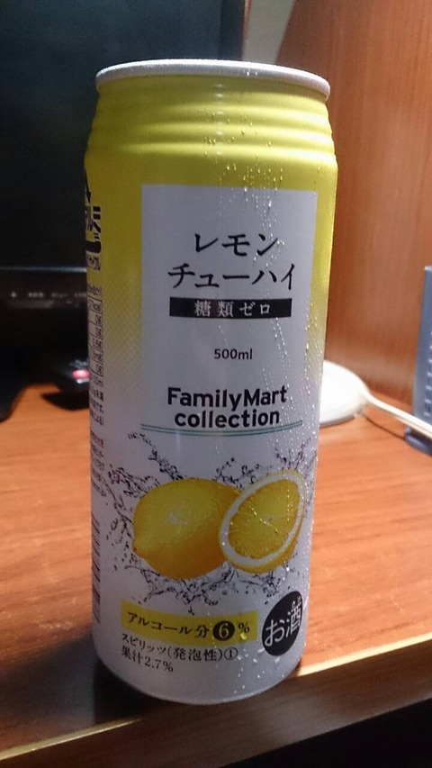

ISUCON5に参加しました。 SQLのチューニングならなんとかなるかなと思うのですが、ミドルを含めたチューニングはあまりやったことがないので、どんなもんなのかちょっと参戦してみました。
結果は惨敗です。スコアは1000ちょっとくらいです。
memcachedとか使えるようにならないとだめだね、ということが確認できました。
以下、ログです。
2015/09/02
参加する日と場所の調整 9/26(土)に決定。 場所に関する案
- 自宅
- 子どもがいて集中できないと思うよ？と嫁さんからのアドバイス
- 会社？
- うーん・・・うーん・・・
- proxyとかあるとなんかあったときにあれな気がする
- コワーキングスペースは？
- そういえば会社の近くにもあるね～
- スタバ
- wifi使えるね！
- でも8時間いるような場所じゃないよね！
- マック
- wifi使えるね！
- でも8時間いるような場所じゃないよね！
- お酒が飲めるところ
- ちょっと考えておきます
場所については決まらず。
2015/09/25
場所の決定。 wifiが使えるマンガ喫茶。
2015/09/26
ISUCON開始です。 10:00開始なので9:50には所定のマンガ喫茶に集合する予定でしたが、
- tamura: 10:30に家を出る暴挙
- yoshimura: 所用のため遅れる
ISUCONは時間との勝負なのに最初からだらけてます。 いろいろあって開始が11:00からになったのでいろいろと助かりました。 そういう感じで、私たちのチームは12:00開始となりました。 とりあえずGoogle Cloud SDKを入れるところから開始です。そういうことは前日までにやっておけという・・・ｗｗ
12:30～
環境構築からスタートです。
tamura [12:42] で、Google Cloud SDKを入れておいてください。Macならcurl https://sdk.cloud.google.com | bashでいけもうす！
tamura [12:43] こんな流れです。curl https://sdk.cloud.google.com | bash gcloud auth login gcloud config set project inspiring-folio-106208
yoshimura [12:44] ありがとうござんやす！やってみます！
tamura [12:44] そのあとにgcloud compute ssh instance-1 --zone asia-east1-cでsshログインできます！
tamura [12:45] あとはsudo su - isuconとかすると、isucon用ユーザになれます。
12:45～
二人ともJava野郎なので必然的にJavaに。とりあえずデプロイをして画面を見てみます。 Google Cloud SDKをつかってとりあえずソースを手元に落としてきます。
gcloud compute copy-files root@instance-1:/home/isucon/webapp/java.tar.gz ~/ --zone asia-east1-cからのEclipse。 空プロジェクトをつくってそこに展開して、Eclipseから configure → convert to Maven project で作業開始です。
yoshimura [13:17] ソースをみれるとこまでいきました！コンバート中なう 昼飯ってもう食いました？カップラーメンのソース焼きそばでも食うかな。
tamura [13:20] 私はカップ麺買ってお湯入れましたｗ
とりあえず配布されたソースでベンチして700を確認。(Rubyだと200でした) そして食べたら眠くなる。
tamura [13:35] これはやばす。食ったら眠くなるｗ
yoshimura [13:40] ソースやきそばなう
13:45～
さっそくMySQLの設定でつまづきます。なぜかMySQLが上がってきません。 そしてあきらめはじめます。
tamura [13:45] あれここって一旦外出はOKなんですかね？酒買ってきたい・・・ｗ
yoshimura [13:45] w 外出OK っていってましたよ 伝票があればOKらしいす
tamura [13:46] なるほど。とりあえず伝票を持ってフロントですね
yoshimura [13:46] それでいけるとおもいます！
からの～
yoshimura [13:49] やきそば完食なう ねむし
おまえもか！
14:00～
MySQL起動です！
tamura [14:05]
やっときましたｗ
unknown variable 'log_slow_queries=/var/log/mysql/mysql-slow.log'
いやいやいやw
単純にコメントを外しただけなのにこの変数名がおかしいだなんてｗ
ほんとに何なんでしょうか・・・・ｗ
slow_query_log_file=/var/log/mysql/mysql-slow.logにすればＯＫのようです。罠です。
yoshimura [14:41]
mysql> SHOW GLOBAL VARIABLES like 'Q%'
-> ;
+------------------------------+----------+
| Variable_name | Value |
+------------------------------+----------+
| query_alloc_block_size | 8192 |
| query_cache_limit | 1048576 |
| query_cache_min_res_unit | 4096 |
| query_cache_size | 16777216 |
| query_cache_type | OFF |
| query_cache_wlock_invalidate | OFF |
| query_prealloc_size | 8192 |
+------------------------------+----------+
クエリキャッシュタイプが無効になっているみたいです
いいよいいよ～ あとは、アクセスが多いページはどこなのかを見てみようと。
tamura [14:42]cat access.log | awk '{print $6, $7}' | sort | uniq -c | sort -n -rこれでアクセストップ１０を出しました。212 "GET / 77 "POST /login 77 "GET /login 71 "GET /friends 56 "GET /logout 54 "GET /footprints 53 "POST /diary/entry 18 "GET /diary/entries/samir_sporer1861 15 "GET /diary/entries/karen1539 14 "GET /profile/jimmy_dibbert3793 13 "GET /profile/samir_sporer1861 12 "GET /profile/icie3199 12 "GET /diary/entries/mathias_leuschke1854 12 "GET /diary/entries/jimmy_dibbert3793 11 "GET /profile/karen1539 11 "GET /profile/dewayne3197 11 "GET /diary/entries/kelsi_yundt1423 10 "GET /profile/daniella_kling728あ、１０件以上あるけどまあいいです。
tamura [14:45] そういえば302は無視していいのか。cat access.log | awk '{print $6, $7, $9}' | sort | uniq -c | grep -v '302$' | sort -r -n192 "GET / 200 77 "GET /login 200 70 "GET /friends 200 53 "GET /footprints 200 18 "GET /diary/entries/samir_sporer1861 200 15 "GET /diary/entries/karen1539 200 13 "GET /profile/samir_sporer1861 200 12 "GET /profile/jimmy_dibbert3793 200 12 "GET /profile/icie3199 200 11 "GET /profile/karen1539 200 11 "GET /profile/dewayne3197 200 11 "GET /diary/entries/mathias_leuschke1854 200 11 "GET /diary/entries/kelsi_yundt1423 200 10 "GET /profile/daniella_kling728 200 10 "GET /diary/entries/jimmy_dibbert3793 200
15:00～
tamura [15:06] ちっと外でて休憩してきます。
yoshimura [15:06] ほい！
yoshimura [15:27]
ありがとうございます！いただきます♪
酒買ってきました。 キャッシュを有効にしたのに反映されていないっぽくて、ちょっと調査中。が、MySQLの起動がうまくいっていなかったようです。
2015-09-26 15:40:52 0 [Warning] options --log-slow-admin-statements, --log-queries-not-using-indexes and --log-slow-slave-statements have no effect if --slow-query-log is not set
2015-09-26 15:40:52 0 [Warning] TIMESTAMP with implicit DEFAULT value is deprecated. Please use --explicit_defaults_for_timestamp server option (see documentation for more details).
2015-09-26 15:40:52 0 [Note] /usr/sbin/mysqld (mysqld 5.6.25-0ubuntu0.15.04.1) starting as process 18230 ...
2015-09-26 15:40:52 18230 [Warning] Buffered warning: Changed limits: max_open_files: 1024 (requested 5000)
2015-09-26 15:40:52 18230 [Warning] Buffered warning: Changed limits: table_open_cache: 431 (requested 2000)
2015-09-26 15:40:52 18230 [Warning] Using unique option prefix myisam-recover instead of myisam-recover-options is deprecated and will be removed in a future release. Please use the full name instead.
2015-09-26 15:40:52 18230 [Note] Plugin 'FEDERATED' is disabled.
2015-09-26 15:40:52 18230 [ERROR] Function 'innodb' already exists
2015-09-26 15:40:52 18230 [Warning] Couldn't load plugin named 'innodb' with soname 'ha_innodb.so'.
2015-09-26 15:40:52 18230 [ERROR] Function 'federated' already exists
2015-09-26 15:40:52 18230 [Warning] Couldn't load plugin named 'federated' with soname 'ha_federated.so'.
2015-09-26 15:40:52 18230 [ERROR] Function 'blackhole' already exists
2015-09-26 15:40:52 18230 [Warning] Couldn't load plugin named 'blackhole' with soname 'ha_blackhole.so'.
2015-09-26 15:40:52 18230 [ERROR] Function 'archive' already exists
2015-09-26 15:40:52 18230 [Warning] Couldn't load plugin named 'archive' with soname 'ha_archive.so'.
2015-09-26 15:40:52 18230 [Note] InnoDB: Using atomics to ref count buffer pool pages
2015-09-26 15:40:52 18230 [Note] InnoDB: The InnoDB memory heap is disabled
2015-09-26 15:40:52 18230 [Note] InnoDB: Mutexes and rw_locks use GCC atomic builtins
2015-09-26 15:40:52 18230 [Note] InnoDB: Memory barrier is not used
2015-09-26 15:40:52 18230 [Note] InnoDB: Compressed tables use zlib 1.2.8
2015-09-26 15:40:52 18230 [Note] InnoDB: Using Linux native AIO
2015-09-26 15:40:52 18230 [Note] InnoDB: Using CPU crc32 instructions
2015-09-26 15:40:52 18230 [Note] InnoDB: Initializing buffer pool, size = 128.0M
2015-09-26 15:40:52 18230 [Note] InnoDB: Completed initialization of buffer pool
2015-09-26 15:40:52 18230 [Note] InnoDB: Highest supported file format is Barracuda.
2015-09-26 15:40:52 18230 [Note] InnoDB: 128 rollback segment(s) are active.
2015-09-26 15:40:52 18230 [Note] InnoDB: Waiting for purge to start
2015-09-26 15:40:52 18230 [Note] InnoDB: 5.6.25 started; log sequence number 4014704312
2015-09-26 15:40:52 18230 [Note] Server hostname (bind-address): '127.0.0.1'; port: 3306
2015-09-26 15:40:52 18230 [Note] - '127.0.0.1' resolves to '127.0.0.1';
2015-09-26 15:40:52 18230 [Note] Server socket created on IP: '127.0.0.1'.
2015-09-26 15:40:52 18230 [Note] Event Scheduler: Loaded 0 events
2015-09-26 15:40:52 18230 [Note] /usr/sbin/mysqld: ready for connections.
Version: '5.6.25-0ubuntu0.15.04.1' socket: '/var/run/mysqld/mysqld.sock' port: 3306 (Ubuntu)
原因不明ですが、とりあえず起動したようです。
yoshimura [15:42]
sql> SHOW GLOBAL VARIABLES like 'q%'
-> ;
+------------------------------+----------+
| Variable_name | Value |
+------------------------------+----------+
| query_alloc_block_size | 8192 |
| query_cache_limit | 1048576 |
| query_cache_min_res_unit | 4096 |
| query_cache_size | 16777216 |
| query_cache_type | ON |
| query_cache_wlock_invalidate | OFF |
| query_prealloc_size | 8192 |
+------------------------------+----------+
きました。で、とりあえずベンチにかけて、1000を記録。MySQLの設定だけであがるんだな～、でもなんやかんや時間かかるな～と。
tamura [15:51] じゃあちょっとアプリを書き直します。
yoshimura [15:51] 了解です！ 僕はチューハイを飲みますw！
え？
テンションあげていきます。
tamura [15:54] 修正箇所２箇所のうち１箇所だけ対応した版をベンチ中です https://www.youtube.com/watch?v=FNSPh3AA6GI YouTube dateyan2000 (MAD) Bomb A Head! m.c.A.T & IKZO（吉幾三）
16:00～
アプリでこねこねしている部分をSQLいっぱつで取得できるように変更しました。結果、微増です。 DBはキャッシュヒット率を上げる方向で進めることにしました。
yoshimura [16:14]
mysql> SELECT (SELECT VARIABLE_VALUE FROM INFORMATION_SCHEMA.GLOBAL_STATUS WHERE VARIABLE_NAME = 'QCACHE_HITS')/(SELECT SUM(VARIABLE_VALUE) FROM INFORMATION_SCHEMA.GLOBAL_STATUS WHERE VARIABLE_NAME IN ('QCACHE_HITS','QCACHE_INSERTS','QCACHE_NOT_CACHED'))*100 AS CACHE_HIT_RATE;
+-------------------+
| CACHE_HIT_RATE |
+-------------------+
| 53.47742240012455 |
+-------------------+
1 row in set (0.00 sec)
いま５３%みたいす SQLはqiitaからぱくりましたw
そしてアプリが重くてベンチが落ちる事態に。
tamura [16:36] おちたｗ やっぱクエリが重いか・・ｗ
クエリをMySQLに投げてみる、。
tamura [16:52] oh...遅い。２つ目のやつは普通にアプリ側でフィルタしたほうが早そうです。
MySQLもバッファを増やす方向で進めていきます。
tamura [16:56]
cat /proc/meminfo
MemTotal: 3633408 kB
MemFree: 841912 kB
MemAvailable: 2372304 kB
Buffers: 80864 kB
Cached: 1603664 kB
SwapCached: 0 kB
Active: 2286572 kB
Inactive: 337576 kB
Active(anon): 941668 kB
Inactive(anon): 3144 kB
Active(file): 1344904 kB
Inactive(file): 334432 kB
Unevictable: 0 kB
Mlocked: 0 kB
SwapTotal: 0 kB
SwapFree: 0 kB
Dirty: 60 kB
Writeback: 0 kB
AnonPages: 939624 kB
Mapped: 57692 kB
Shmem: 5188 kB
Slab: 56264 kB
SReclaimable: 39984 kB
SUnreclaim: 16280 kB
KernelStack: 3376 kB
PageTables: 9224 kB
NFS_Unstable: 0 kB
Bounce: 0 kB
WritebackTmp: 0 kB
CommitLimit: 1816704 kB
Committed_AS: 1192572 kB
VmallocTotal: 34359738367 kB
VmallocUsed: 9700 kB
VmallocChunk: 34359726568 kB
HardwareCorrupted: 0 kB
AnonHugePages: 749568 kB
CmaTotal: 0 kB
CmaFree: 0 kB
HugePages_Total: 0
HugePages_Free: 0
HugePages_Rsvd: 0
HugePages_Surp: 0
Hugepagesize: 2048 kB
DirectMap4k: 69620 kB
DirectMap2M: 2656256 kB
DirectMap1G: 1048576 kB
こんな感じなので、メモリは１GBくらい割り当てて大丈夫です！
17:00～
使ったこと無いですが、ISUCONの過去の実績などをみるとmemcachedがいいらしい、ということなのでmemcachedを調べます。 もう17:00なんですが。。。
tamura [17:25] うーんmemcachedよくわからんし・・・ｗ 来年の課題ですね〜ｗ
そして焼きそばへ・・・
tamura [17:28] 焼きそばでも食うか・・ｗ
yoshimura [17:28] w ２杯目すかw？
tamura [17:28] そうですね。飲んだら食いたくなりますｗ
yoshimura [17:28] 飲んで立ち上がったら意外に酔いがまわってましたw
そして終了モードへ
tamura [17:53] もうあとはあれですかね。サーバ再起動時にちゃんとアプリが動くように設定ですかね
yoshimura [17:58] 今日はありがとうございました！また来年出直したいと思いますw
そう、yoshimuraは飲み会があるとのことで、1時間早く上がりましたｗｗｗ
大丈夫か？このチーム → 案の定、だめでしたｗｗｗ
久々にマンガ喫茶にきたので、１冊だけ読んで帰りました。